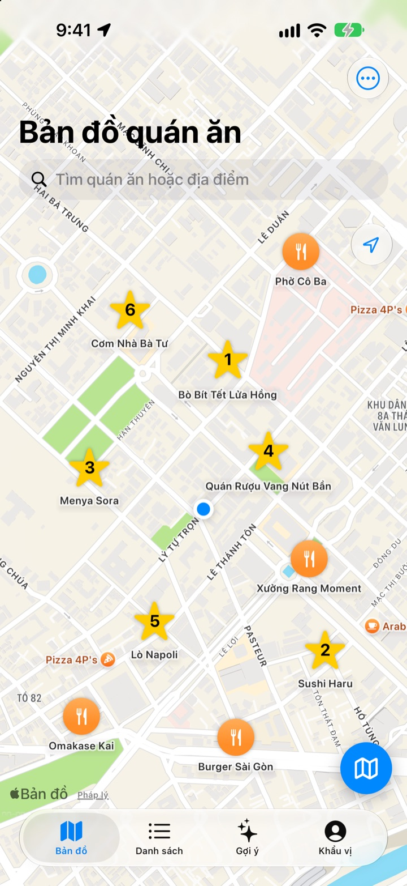
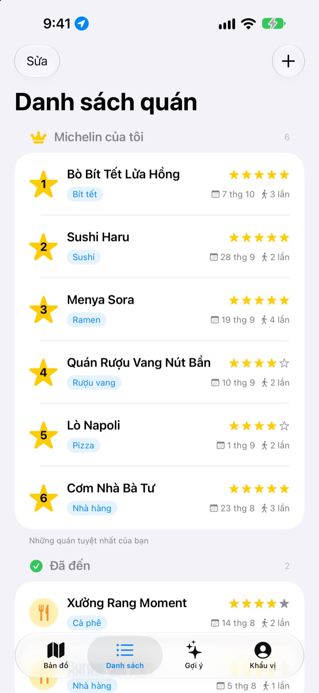
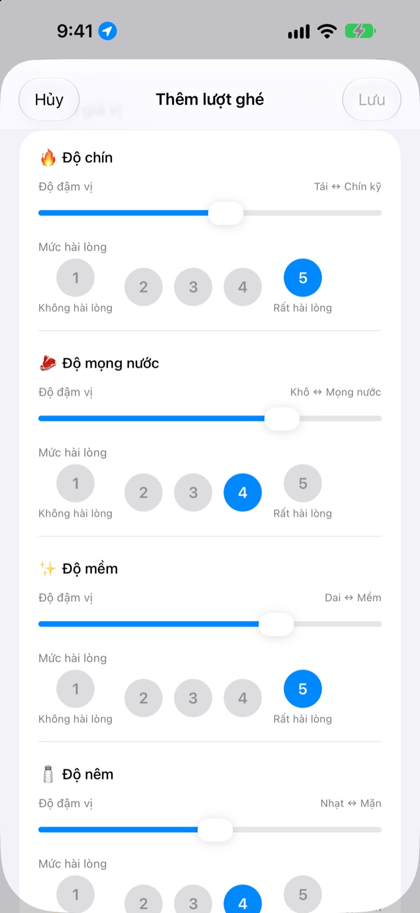
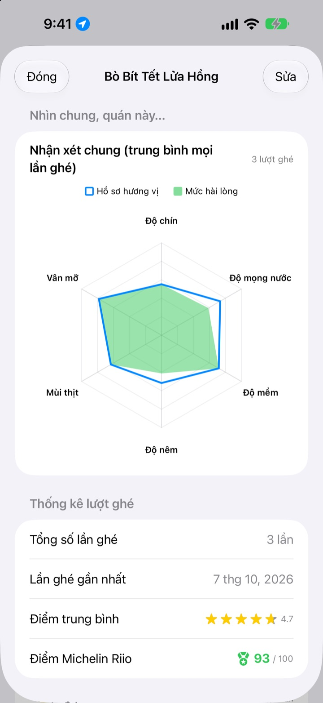

Quán ngon đã ghé,
không còn quên nữa
Ghim lên bản đồ những quán đã đến và những quán muốn thử, mỗi lần ghé lại ghi món đã gọi, ảnh và hương vị. Khi phân vân không biết ăn ở đâu, chính ghi chép của bạn sẽ trả lời.
Mọi tính năng đều miễn phí. Không cần đăng ký, dữ liệu chỉ nằm trên iPhone của bạn.

Thử chấm điểm một món
Chọn loại món, rồi chấm độ đậm của từng vị và mức bạn thích nó. Cùng tiêu chí và cùng cách tính như một lượt ghé trong ứng dụng.
Quán đó ngon lắm, mà mình gọi món gì nhỉ?
Bạn nhớ là rất thích quán đó, nhưng tên thì lờ mờ, còn đã gọi món gì hay nước dùng có mặn không thì chịu. Thế là lại tìm kiếm và đọc đánh giá của người lạ. Insaeng giữ trên bản đồ những gì chính bạn đã nếm, để lần chọn quán tiếp theo dựa vào trải nghiệm của bạn.
Đã đến, Muốn đến và Michelin của riêng bạn
Tìm trên bản đồ hoặc chạm vào một địa điểm gần đó là lưu ngay. Tách riêng quán đã đến với quán muốn thử, và xếp hạng sáu quán yêu thích nhất từ 1 đến 6.
Khi ai đó hỏi quán ngon, chỉ cần mở danh sách này ra.

Câu hỏi hợp với từng món
Độ đậm của từng vị, như cay hay mặn, chỉnh bằng thanh trượt, còn mức bạn thích thì chấm riêng từ 1 đến 5. Bít tết hỏi độ chín và độ mọng nước, sushi hỏi cơm và phần cá, ramen hỏi nước dùng và sợi mì.
Mỗi lượt ghé còn lưu món, ảnh, số sao và ghi chú.

Quán đáng quay lại, nhìn số là biết
Ghé nhiều lần, trang của quán sẽ hiện nhận xét chung tính trung bình mọi lần ghé, cùng Điểm Michelin Riio trên thang 100 kết hợp số sao và mức hài lòng.
Rời một quán đã lưu, ít phút sau sẽ có thông báo nhắc bạn ghi lại.

Bắt đầu với ba bước
- 1
Lưu quán
Tìm trên bản đồ hoặc chạm vào địa điểm gần đó.
- 2
Ghé xong thì ghi
Món, ảnh, số sao và hương vị. Chấm hương vị là tùy chọn.
- 3
Chọn quán tiếp theo
Xem Top 6 và điểm, rồi chỉ đường bằng Apple Maps, Kakao Map hoặc Naver Map.
Tiêu chí chấm theo từng loại món
- 🍽️ Chung
- Độ cay, Độ đậm, Độ ngọt, Độ mặn, Độ béo, Vị nguyên bản
- 🥩 Bít tết
- Độ chín, Độ mọng nước, Độ mềm, Độ nêm, Mùi thịt, Vân mỡ
- 🍣 Sushi
- Shari (cơm), Neta (phần cá), Wasabi, Cân bằng, Độ nắm, Nhiệt độ
- 🍜 Ramen
- Nước dùng, Sợi mì, Chashu, Topping, Nhiệt độ, Cân bằng
- 🍕 Pizza
- Đế bánh, Sốt, Phô mai, Độ chín, Topping, Cân bằng
- 🍷 Rượu vang
- Độ đậm, Tannin, Độ chua, Hương thơm, Hậu vị, Cân bằng
- ☕ Cà phê
- Độ chua, Độ đậm, Hương vị, Hậu vị, Độ ngọt, Cân bằng
Các món khác được chấm theo tiêu chí chung ở dòng đầu tiên. Bạn cũng có thể tự tạo danh mục món.
Câu hỏi thường gặp
Thêm quán như thế nào?
Nhập tên quán vào ô tìm kiếm phía trên bản đồ, rồi chạm “Thêm vào danh sách quán của tôi” trong kết quả. Bạn cũng có thể chạm vào một địa điểm gần đó hiện trên bản đồ để thêm ngay. Quán không có trong kết quả tìm kiếm thì bạn tự thêm tại vị trí hiện tại hoặc tại điểm chọn trên bản đồ.
“Đã đến”, “Muốn đến” và Top 6 là gì?
Đã đến – Những quán bạn đã ghé. Bạn có thể ghi nhật ký ghé quán. Muốn đến – Những quán bạn muốn ghé một ngày nào đó. Sau khi đi, hãy chuyển sang “Đã đến” trong màn hình chi tiết của quán. Top 6 (Michelin của tôi) – Xếp hạng sáu quán bạn yêu thích nhất từ hạng 1 đến hạng 6. Quán trong danh sách “Muốn đến” không thể đặt vào Top 6.
Có bắt buộc phải đánh giá hương vị không?
Không, đó là tùy chọn. Nếu chấm, độ đậm vị và mức hài lòng sẽ được cộng vào nhận xét chung của quán và tính vào Điểm Michelin Riio.
Khi nào thông báo “Hôm nay ghé quán thế nào?” xuất hiện?
Nếu bạn ở gần một quán đã lưu hơn 5 phút rồi rời đi, khoảng 40 phút sau thông báo sẽ đến. Tính năng này cần cho phép vị trí “Luôn luôn” và cho phép thông báo. Nếu không muốn nhận thông báo, hãy tắt thông báo trong Cài đặt > Ứng dụng > Insaeng hoặc đổi vị trí sang “Khi dùng ứng dụng”. Việc kiểm tra vị trí chỉ diễn ra trên thiết bị; ứng dụng không lưu lộ trình di chuyển và không gửi ra ngoài.
Không cho phép vị trí thì có dùng được không?
Vẫn dùng được. Bạn có thể tự chọn vị trí trên bản đồ để thêm quán và ghi lại. Chỉ có tính năng hiển thị vị trí hiện tại và nhắc ghi lại sau khi ghé là không dùng được.
Tìm địa điểm không ra kết quả
Tìm kiếm địa điểm cần có kết nối Internet. Hãy thử lại với tên khác hoặc từ khóa ngắn hơn. Nếu vẫn không có, bạn có thể chọn một điểm trên bản đồ và tự thêm quán.
Dữ liệu được lưu ở đâu? Có đồng bộ với thiết bị khác không?
Quán, nhật ký ghé quán và ảnh đều chỉ được lưu trên iPhone này. Phiên bản hiện tại chưa hỗ trợ đồng bộ với thiết bị khác, và tính năng sao lưu, khôi phục iCloud trong phần cài đặt cũng chưa hoạt động. Dữ liệu của ứng dụng vẫn nằm trong bản sao lưu toàn bộ iPhone (sao lưu iCloud hoặc sao lưu trên máy tính).
Tôi muốn xóa toàn bộ dữ liệu
Trong phần cài đặt ở màn hình bản đồ, chạm “Xóa toàn bộ dữ liệu” để xóa quán và nhật ký ghé quán. Thao tác này không thể hoàn tác, hãy cẩn thận. Muốn xóa sạch cả ảnh thì hãy xóa ứng dụng.
Xóa rồi cài lại ứng dụng thì dữ liệu còn không?
Không. Vì dữ liệu chỉ được lưu trên thiết bị nên khi xóa ứng dụng, dữ liệu cũng bị xóa theo. Hãy kiểm tra kỹ trước khi xóa ứng dụng.
Có thật là miễn phí hết không?
Có. Mọi tính năng đều miễn phí, không quảng cáo, không cần tài khoản. Mục “Ủng hộ nhà phát triển” trong cài đặt là hoàn toàn tùy ý và không mở khóa thêm gì.
Nếu vấn đề của bạn chưa có câu trả lời ở trên, hãy gửi ngay trong ứng dụng tại Cài đặt > Hỗ trợ hoặc gửi email đến mizzking75@gmail.com. Nếu bạn ghi rõ phiên bản ứng dụng, mẫu iPhone và bạn đã làm gì ở màn hình nào, chúng tôi sẽ kiểm tra nhanh hơn.